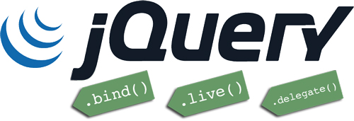

The following are the basic standards and best practices for writing jQuery code. These do not include native JS standards and best practices.

Loading jQuery
1. Try to use a CDN to load jQuery.
<script type="text/javascript" src="//ajax.googleapis.com/ajax/libs/jquery/1.11.0/jquery.min.js"></script>
<script>window.jQuery || document.write('<script src="js/jquery-1.11.0.min.js.html" type="text/javascript"><\/script>')</script>
Baidu's public CDN library should be the fastest in all regions of China, and it has many JS libraries. Recommended for everyone.
<script src="../libs.baidu.com/jquery/1.8.3/jquery.min.js"></script>
Upyun's JS library acceleration service has decent access speed in China, but unfortunately it has relatively few JS libraries.
<script src="../upcdn.b0.upaiyun.com/libs/jquery/jquery-1.8.3.min.js"></script>
Sina's JS/CSS library, also known as the Sina SAE public library, has decent access speed in China and a comprehensive collection of JS libraries. Recommended for everyone.
<script src="http://lib.sinaapp.com/js/jquery/1.8.3/jquery.min.js"></script>
jQuery Variables
- 1. All variables that use or cache jQuery objects should start with
$the prefix. - 2. Always cache the objects returned by jQuery selectors into local variables for reuse.
var $myDiv = $("#myDiv");
$myDiv.click(function(){....});
- 3. Use camelCase naming for variables.
Selectors
- 1. Use ID selectors whenever available, as they internally use
document.getElementById()。 - 2. When using class/pseudo-class selectors, always attach an element type to the selector to avoid scanning the entire DOM tree.
// BAD 在整个DOM树中扫描"products"类名
var $products = $(".products");
// GOOD 只在DIV元素中扫描"products"类名
var $products = $("div.products");
- 3. In ID > child-level selectors, use the
find()method. Because the first half of the selector does not use the Sizzle selector engine to find elements.
// BAD, Sizzle选择器引擎查找层级
var $productIds = $("#products div.id");
// GOOD, 只有div.id走Sizzle选择器引擎
var $productIds = $("#products").find("div.id");
- 4. The latter part of the selector should be more specific than the former part.
// 未优化
$("div.data .gonzalez");
// 优化
$(".data td.gonzalez");
- 5. Avoid redundant selectors.
$(".data table.attendees td.gonzalez");
// Better: 有必要时要去掉中间不必要的内容
$(".data td.gonzalez");
- 6. Add context to selectors.
// 要扫描整个DOM树寻找
$('.class');
// 只在#class-container里扫描
$('.class', '#class-container');
- 7. Avoid using wildcard selectors.
$('div.container > *'); // BAD
$('div.container').children(); // BETTER
- 8. Avoid implicit wildcard selectors. When the following input is omitted, the wildcard selector is implicitly used.
$('div.someclass :radio'); // BAD
$('div.someclass input:radio'); // GOOD
- 9. ID selectors use
document.getElementById(). ID selectors do not need to be nested.
$('#outer #inner'); // BAD
$('div#inner'); // BAD
$('.outer-container #inner'); // BAD
$('#inner'); // GOOD
DOM Operations
- 1. Always detach existing DOM elements first, then perform operations, and finally attach them back to the DOM.
var $myList = $("#list-container > ul").detach();
//...针对$myList的许多DOM操作
$myList.appendTo("#list-container");
- 2. Use string concatenation or array.join() instead of the .append() method.
// BAD
var $myList = $("#list");
for(var i = 0; i < 10000; i++){
$myList.append("<li>"+i+"</li>");
}
// GOOD
var $myList = $("#list");
var list = "";
for(var i = 0; i < 10000; i++){
list += "<li>"+i+"</li>";
}
$myList.html(list);
// EVEN FASTER
var array = [];
for(var i = 0; i < 10000; i++){
array[i] = "<li>"+i+"</li>";
}
$myList.html(array.join(''));
- 3. Do not operate on unknown elements.
// BAD: 这个函数内部要先执行3个函数，才发现选择器选择到的可能是空内容
$("#nosuchthing").slideUp();
// GOOD
var $mySelection = $("#nosuchthing");
if ($mySelection.length) {
$mySelection.slideUp();
}
Events
- 1. Use only one Document Ready function per page. This is good for debugging.
- 2. Do not use anonymous functions to bind events. Anonymous functions are not conducive to debugging, maintenance, testing, and reuse.
$("#myLink").on("click", function(){...}); // BAD
// GOOD
function myLinkClickHandler(){...}
$("#myLink").on("click", myLinkClickHandler);
- 3. Document ready functions should not be anonymous functions. Anonymous functions cannot be reused or tested.
$(function(){ .. }); // BAD: 不容易复用也不利于测试
// GOOD
$(initPage); // or $(document).ready(initPage);
function initPage(){
// Document ready里可以初始化变量和调用其他初始化函数
}
- 4. Document ready functions should be placed in external files, and after other initialization settings, call these functions in inline JS.
<script src="my-document-ready.js.html"></script> <script> // 任何其他需要设置的全局变量 $(document).ready(initPage); // or $(initPage); </script>
- 5. Do not add behavior (inline JS) in HTML files; this is a debugging nightmare. Always use jQuery to bind events, and it will be easy to unbind events later.
<a id="myLink" href="../index.html" onclick="myEventHandler();">my link</a> <!-- BAD -->
$("#myLink").on("click", myEventHandler); // GOOD
- 6. If necessary, use custom namespaces for events. This makes it easy to unbind specific events on a DOM element without affecting other events on that element.
$("#myLink").on("click.mySpecialClick", myEventHandler); // GOOD
// 后面会很容易的解绑这个特定的点击事件
$("#myLink").unbind("click.mySpecialClick");
Ajax
- 1. Avoid using
.getJSON()和.get(), only use$.ajax(), the former two internally use the latter. - 2. Do not
httpsuse on websiteshttprequests. Prefer protocol-relative URLs (remove http/https from the URL). - 3. Do not put request parameters in the URL; put them in the data object instead.
// 不可读
$.ajax({
url: "something.php?param1=test1¶m2=test2",
....
});
// 可读
$.ajax({
url: "something.php",
data: { param1: test1, param2: test2 }
});
- 4. Explicitly set the data type,
dataTypeso that it is easy to know what kind of data you are currently handling. - 5. When binding events to DOM elements loaded via Ajax, try to use event delegation. The advantage of event delegation is that elements added to the DOM later by Ajax can also respond to events.
$("#parent-container").on("click", "a", delegatedClickHandlerForAjax);
- 6. Use Promises.
$.ajax({ ... }).then(successHandler, failureHandler);
// OR
var jqxhr = $.ajax({ ... });
jqxhr.done(successHandler);
jqxhr.fail(failureHandler);
- 7. Ajax template code:
var jqxhr = $.ajax({
url: url,
type: "GET", // 默认值GET，可根据需要配置
cache: true, // 默认值true, dataType是'script'或'jsonp'时为false，可根据需要配置
data: {}, // 请求参数对象
dataType: "json", // 设置数据类型
jsonp: "callback",// 只在操作JSONP时设置此项
statusCode: { // 针对特定错误码的回调处理函数
404: handler404,
500: handler500
}
});
jqxhr.done(successHandler);
jqxhr.fail(failureHandler);
Effects and Animations
1. Use a consistent approach to implement animations.
2. Do not overuse animation effects, unless pursuing user experience.
- Try to use simple show/hide/toggle/slideUp/slideDown methods to show and hide elements.
- Try to use predefined animation durations:
slow,fast或400
Plugins
- 1. Always choose plugins that are well-maintained, well-documented, well-tested, and have community support.
- 2. Carefully check the plugin's compatibility with the jQuery version you are using.
- 3. Any reusable/generic components should be extracted into jQuery plugins.
Chaining
- 1. Try to use chaining instead of caching variables or calling selector methods multiple times.
$("#myDiv").addClass("error").show();
- 2. When a chain exceeds three calls or becomes complex due to event binding, use line breaks and indentation to keep the code readable.
$("#myLink")
.addClass("bold")
.on("click", myClickHandler)
.on("mouseover", myMouseOverHandler)
.show();
- 3. For longer chains, it is acceptable to cache an intermediate object in a variable.
Other Principles
- 1. Use object literals for parameters whenever possible.
$myLink.attr("href", "#").attr("title", "my link").attr("rel", "external"); // BAD
// GOOD
$myList.attr({
href: "#",
title: "my link",
rel: "external"
});
- 2. Do not mix CSS into jQuery.
$("#mydiv").css({'color':red, 'font-weight':'bold'}); // BAD
.error { color: red; font-weight: bold; } /* GOOD */
$("#mydiv").addClass("error"); // GOOD
- 3. Do not use deprecated methods.
- 4. Use native JS methods when necessary.
$("#myId"); // 还是慢了些
document.getElementById("myId");
Click me to share notes
<p style="font-size:14px;">The note must be an extension of the content of this article!</p><br> <p style="font-size:12px;"><a href="../tougao.html" target="_blank">To submit an article, click here</a></p> <p style="font-size:14px;"><a href="./runoob-user-test-intro.html" target="_blank">How to get a registration invitation code</a></p> <h3 class="text-muted"><i class="fa fa-info-circle" aria-hidden="true"></i> You must <a href=".." class="runoob-pop">log in</a> before sharing notes!</h3> <p><a href="./runoob-user-test-intro.html" target="_blank">How to get a registration invitation code</a></p>